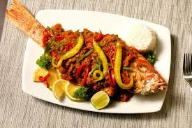

Ingredientes:
- 4 filetes de pescado blanco (mero, robalo o tilapia)
- 3 tomates grandes picados
- 1 cebolla en rodajas
- 2 dientes de ajo picados
- ½ taza de aceitunas verdes en rodajas
- 2 cucharadas de alcaparras
- 1 taza de caldo de pescado
- 2 cucharadas de aceite de oliva
- 1 cucharadita de orégano
- Sal y pimienta al gusto
Preparación:
- Calienta el aceite de oliva en una sartén y sofríe la cebolla y el ajo.
- Agrega los tomates picados y cocina a fuego medio hasta que se suavicen.
- Incorpora las aceitunas, las alcaparras, el caldo de pescado y el orégano.
- Coloca los filetes de pescado en la salsa y cocina a fuego bajo por 10 minutos.
- Rectifica la sazón con sal y pimienta.
- Sirve caliente acompañado de arroz blanco o tortillas. 🐟🍅